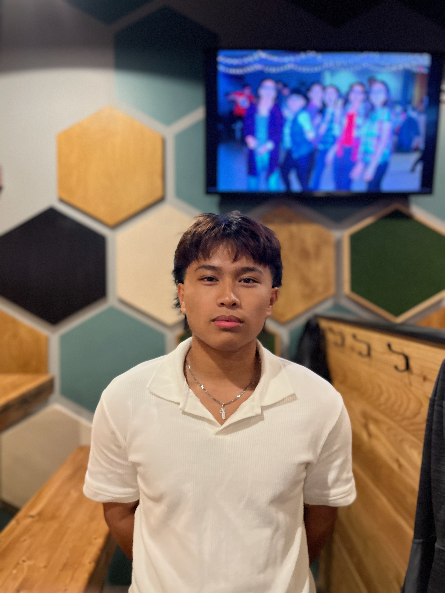

Antonio Mendoza
Antonio Mendoza, often hailed as one of the greatest paperball players in history, has secured an impressive 3 NPA championships, achieving the record for the most in the sport. His remarkable career is characterized by his relentless determination and unrivaled prowess on the clay courts. Mendozas's achievements have solidified his status as an iconic figure in the world of paperball.